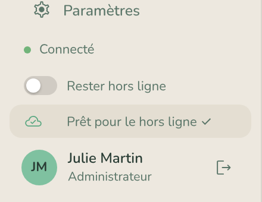
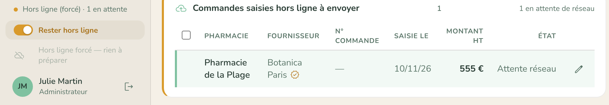

|
CelField.
FOCUS · N°2 · 17 NOVEMBRE 2026
Préparer sa tournée hors ligne
|
Bonjour,
Une zone blanche, un train, une officine au sous-sol : CelField continue de fonctionner sans réseau. Vos pharmacies, leur historique, les catalogues et la saisie des commandes restent sous la main, et tout repart tout seul quand la connexion revient. Voici, en trois temps, comment en tirer le meilleur.
|
| 1 · Avant de partir |
| Un clic sur « Préparer le hors ligne » |
| Menu, en bas à gauche, au-dessus de votre nom |
| CelField garde en permanence une copie de vos données sur l'appareil et la tient à jour pendant que vous travaillez. Avant une tournée, cliquez sur Préparer le hors ligne, de préférence en Wi-Fi : tout ce qui manque est téléchargé d'un coup. Le bouton vous dit où vous en êtes : « Prêt pour le hors ligne ✓ », ou le nombre d'éléments encore manquants. |
| Autre bon réflexe : connectez-vous une fois avec réseau sur l'appareil que vous emportez. Ensuite, même sans connexion, vous pourrez ouvrir CelField avec votre mot de passe habituel, pendant 14 jours. |
 |
|
| 2 · Pendant la tournée |
| Réseau faible ? Choisissez « Rester hors ligne » |
| Interrupteur dans le menu, juste au-dessus de « Préparer le hors ligne » |
| Sans aucun réseau, CelField bascule seul. Le cas le plus pénible est le réseau présent mais qui ne répond pas : une barre de 4G qui va et vient. Activez alors Rester hors ligne : les pages s'ouvrent instantanément depuis l'appareil, sans attendre le réseau. La pastille en bas du menu affiche « Hors ligne (forcé) » et le nombre d'éléments en attente d'envoi. |
| Ce qui fonctionne sans réseau : |
• les fiches pharmacies, leur historique, leur chiffre d'affaires et vos rapports ;
• les catalogues, packs et CGV de vos marques ;
• la saisie des commandes, brouillons et devis, avec les prix et remises habituels ;
• la modification d'une commande saisie hors ligne : tableau de bord, bouton crayon sur la commande en attente ;
• l'envoi du bon de commande à la pharmacie, pour une commande déjà transmise : il est programmé et partira au retour du réseau ;
• les retouches de fiches fournisseurs, produits, packs et CGV (sauf pour une marque reliée en direct, qui gère son catalogue).
|
| Une commande saisie hors ligne n'a pas encore de numéro : il lui est attribué à l'envoi. Un devis n'a son PDF qu'au retour du réseau. Et si vous devez laisser l'appareil, quittez la session : hors ligne, CelField vous propose de la verrouiller par un code plutôt que de vous déconnecter. |
 |
|
| 3 · Au retour du réseau |
| Tout repart, dans l'ordre |
| Tableau de bord → Commandes saisies hors ligne à envoyer |
| Dès que le réseau revient, et après avoir désactivé « Rester hors ligne » si vous l'aviez activé, ce que vous avez saisi est transmis automatiquement, dans l'ordre de saisie, sans doublon. Vos commandes reçoivent leur numéro et apparaissent dans le bloc Commandes saisies hors ligne à envoyer : un clic sur Tout envoyer les transmet aux fournisseurs dans leur format habituel (PDF, fichier EDI…). |
| Si la pastille indique « Session expirée », cliquez dessus pour vous reconnecter : rien n'est perdu, la file attend sur l'appareil. |
|
| Ce qui a été renforcé récemment |
| Aucune saisie perdue en silence — si l'appareil n'a pas pu conserver une commande, CelField vous le dit tout de suite et garde votre panier, au lieu de faire comme si elle était enregistrée. |
| Pages instantanées en zone de réseau faible — hors ligne, les pages s'ouvrent depuis l'appareil sans attendre une connexion qui ne répond pas. |
| Une copie qui se corrige d'elle-même — une commande ou une fiche supprimée depuis un autre poste disparaît aussi de votre appareil, et des droits élargis par votre administrateur font apparaître les fiches correspondantes sans manipulation. |
|
|
| Dans quinze jours : les nouveautés de novembre, dont les produits à paraître, préparés à l'avance avec leurs grilles et leurs packs. |
|
Une question, une idée d'amélioration ? Répondez simplement à ce message.
Bonne tournée,
Vincent — CelField
|
Vous recevez cette lettre parce que vous utilisez CelField.
Les captures sont faites sur un espace de démonstration aux données fictives.
celfield.com
|
|